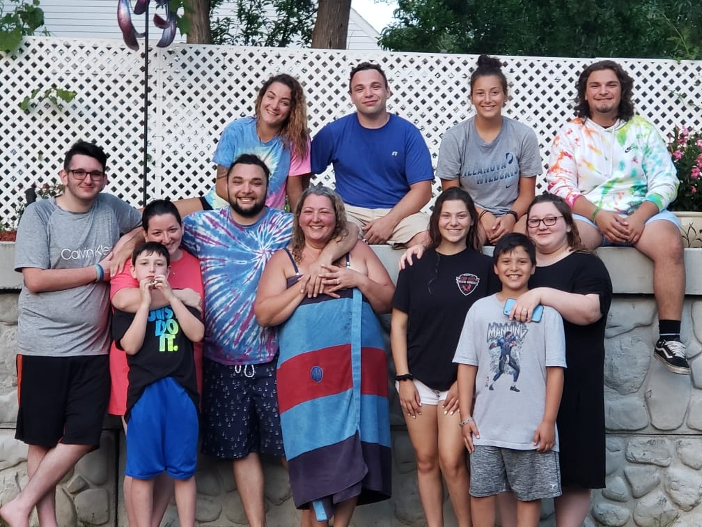
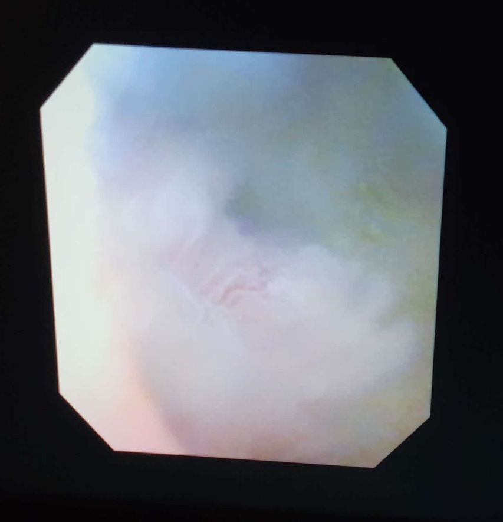
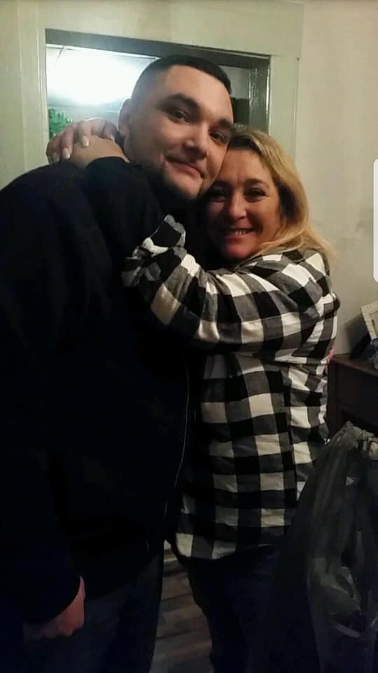

On January 25th I got diagnosed with bladder cancer. I'd been noticing some weird stuff going on with my body since like October, and after some tests to rule out minor stuff, that's what it ended up being.

Actual picture of my tumor
We caught it early, like very early, stage TA, which is like pre stage 1. Not every cancer is the same, and if you could pick what kind you get, next to skin cancer, this is like the best one to have.
I've got a surgery scheduled with a really great surgeon to remove the tumor on March 3rd. The next day I get 1 chemo treatment, and then for the next 2 years every 90 days I go in to check to see if it's grown back.

David Ornstein, my surgeon
Now the only thing left to do is pray and pay. I found out the hard way how important it is to look over benefits before settling for your employer's medical plan. Currently my insurance is only willing to pay $250 towards the cost of my surgery.
I have found better insurance since then, and while it saves me money from having to pay out of pocket, health care is very expensive. If you have anything to spare, every dollar counts towards medical bills.
You can donate directly to my Medical Bill Fund Here
